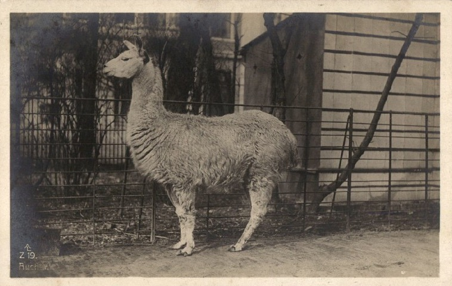
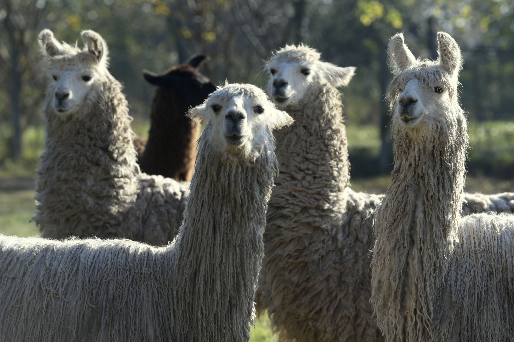
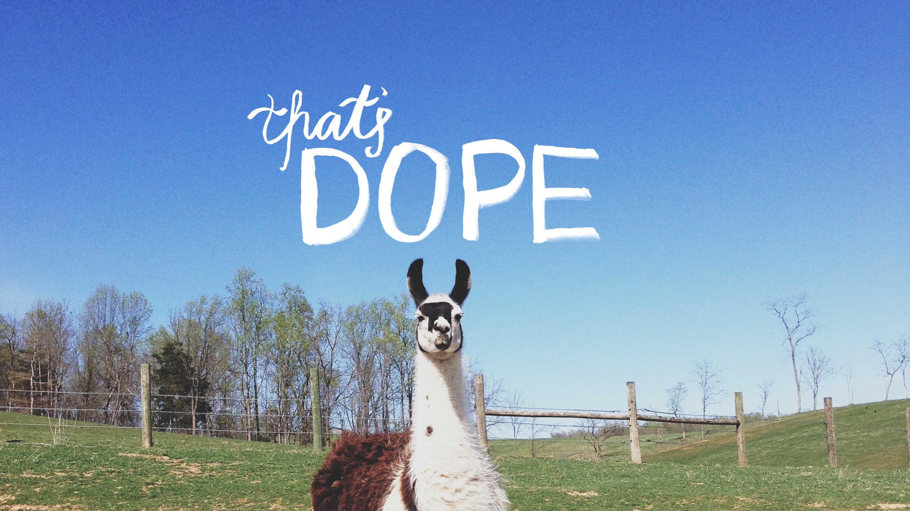
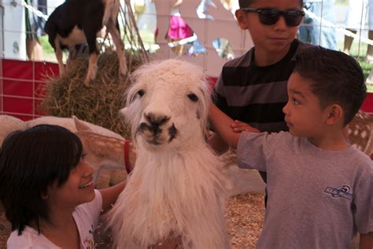

Nomadic ZOO and healing therapy
We are a company that specializes in emotional therapy with animals. We believe that through interaction with them one can find peace and new meaning in life as they are a haven from harsh reality of modern world. Our company organizes both meetings with llamas and specialized therapy sessions. Our woolly friends neither judge nor care about your bank account balance.

We do not have a permanent area of operation. Rather we are nomads who roam throughout the country with our herd of llamas. Lenght of our stay in a given area is determint by people's interest in our services, weather and animals condition.

When we are not on the road, we regularly organize meetings with llamas where everyone can see those majestic animals from up close and even feed them. During that time, you can also buy merchandise and products from their wool.
Animal therapy is our specialty. We hold llama healing sessions for with you can sign up in "Prices" section. If you are a hospic, child help center etc. it is possible to have us come to you though llamas prefer if the patients come to them and not the other way around.

